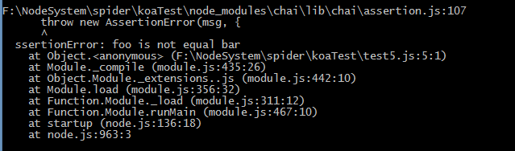
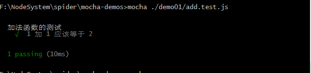
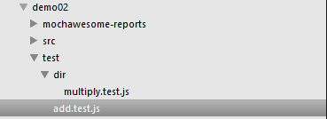
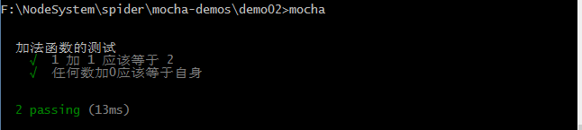
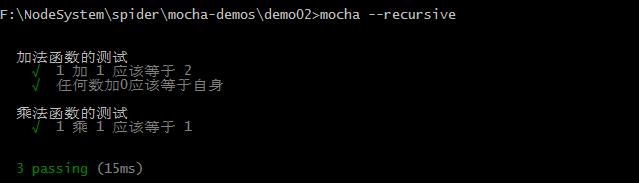

JS测试
断言库
要学习JS测试，首先要学习的就是断言assert。Node.js提供了assert 模块api，但是功能有限。
chai–TDD（测试驱动开发）/BDD（行为驱动开发）的框架
略提一下：BDD的expect/should风格语义性更强，而TDD风格的assert测试驱动开发，先写测试用例，再开发。assertion style
assert
assert与其他两种的区别是，不能链式调用。它与nodejs的内置assert接口相似，只是增添了一些功能。
assert api
注意，1assert('foo' =='bar', 'foo is not equal bar');运行结果：

assert没有返回值，如果assert不为true，就直接抛出assertionErrorBDD style
Expect
Expect/Should API
简介：
连接谓词：to,be,been,is,that,which,and,has,have,with,at,of,same;这些词设置语义化，没有实质上的作用。
demo：12var foo = 'bar';expect(foo).to.that.a('string');与
12var foo = 'bar';expect(foo).to.been.a('string');没有区别。
- .not跟在链式调用后的否定断言
- .deep为equal与property断言增加deep flag
- .any为key断言增加any flag
- .all位keys断言增加all flag
- .a(type)–别名.an,断言param的type
- .include(value)–别名.contain,断言array中的元素，String的substring，当用于object时，则转变为于.keys断言的contains flag
- .ok断言truthy
- .true断言true（与.ok的区别在于，.true只能为true，而.ok可以是Boolean(value)转换后的值，因此expect(true).to.be.true,而expect(1).to.be.true或抛出AssertionError
- .false断言false，与.true相对
- .null断言null
- .undefined断言undefined
- .NaN断言NaN
- .exist断言（除null与undefined之外）
- .empty断言（string的length，array的length为0，object的enumberable keys的length为0）
- .arguments断言为函数参数
.equal(value)对比是否严格相等，当添加了deep标记，就只比较值是否相等。
12expect({ foo: 'bar' }).to.not.equal({ foo: 'bar' });expect({ foo: 'bar' }).to.deep.equal({ foo: 'bar' });.eql(value)等价于.deep.equal(value)
- .above(value)用于直接比较number类型大小以及配合.length.above(value)使用
- .least(value)great than equal
- .below(value)less than
- .most(value) less than equal
- .within(start, finish) number大小在start-finish内，以及配合.length.within(start, finish)使用
……
Should
Should与expect使用同一套接口，API相同，用法略有不同。12345var expect = require('chai').expect;var should = require('chai').should();var foo = 'bar';expect(foo).to.be.a('string');foo.should.be.a('string');另外：should因为是继承自object.prototype,因此如果为null或者undefined情况下，foo.should将会报错。这种情况下，通过以下方式：
- should.exist
- should.not.exist
- should.equal
- should.not.equal
- should.Throw
- should.not.Throw
123456var should = require('chai').should();db.get(1234, function(err, doc) {should.not.exist(err);should.exist(doc);doc.should.be.an('object');});
mocha框架（此章节参考了阮一峰的测试框架Mocha实例教程）
mocha 官网
测试框架mochajs详解
测试框架 Mocha 实例教程
google搜索了n久，遗憾的是没有mocha的标准文档说明describe，it的用法。这里，暂时以阮老师的文档中为参考。
chai API文档
github chai
简易demo123456// add.jsfunction add(x, y) {return x + y;}module.exports = add;测试脚本要与被测试的源码脚本同名，上文中add.js对应的文件为add.test.js或者add.spec.js（表示规格）
12345678var add = require('./add.js');var expect = require('chai').expect;describe('加法函数的测试', function() {it('1 加 1 应该等于 2', function() {expect(add(1, 1)).to.be.equal(2);});});测试脚本，可以独立执行，它包含一个或者多个describe块，每个describe块应该包括一个或者多个it块。
describe块称为“测试套件”（test suite），表示一组相关的测试集合。两个参数，第一个参数是suite的描述，第二个是实际执行的函数。
it块称为“测试用例”（test case），表示一个单独的测试，是测试的最小单位，两个参数，第一个参数为测试用例的名称，第二个参数为实际执行的函数。
mocha命令运行：

习惯一般将测试脚本放在test目录下，而mocha命令默认会运行test目录下的所有测试文件。也就是，不指定路径，直接运行mocha命令，macha会去test下寻找文件。
例如，文件结构如下，

直接运行mocha命令，结果

从结果中可以看到，只运行了test下的文件，而子目录dir下的文件并没有运行。
通过给mocha命令添加参数recursive，可以改变这一行为。

其他内容参考阮一峰的10个demo，并运行一遍，即可掌握。参考资料
测试用例：mocha，should，istanbul
单元测试工具Mocha和SuperTest
js单元测试断言框架chaijs